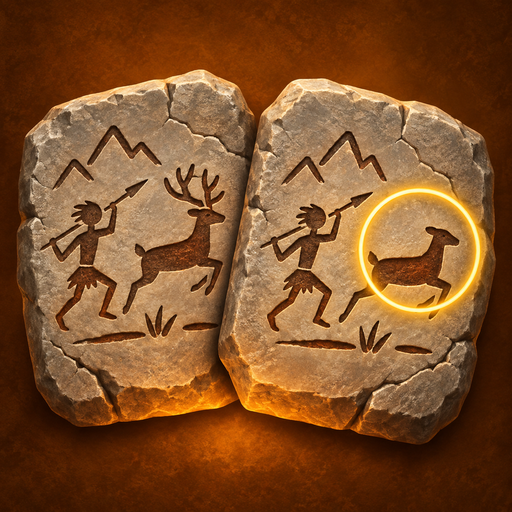

A find-the-differences puzzle game across the ages.
Find Differences: Time Travel is a relaxing "spot the difference" puzzle game that sends you on a journey through history. Each level presents two nearly identical scenes — you tap to find every subtle change between them, from a misplaced torch in a Stone Age camp to a shifted jar in a Mesopotamian marketplace.
Levels are grouped into chapters, and chapters into historical ages — as you complete them, the map unfolds further into the past (and beyond). Along the way you'll fill a growing museum collection of artifacts discovered from each era, and can return every day for a fresh daily challenge level and streak rewards.
The game is available in six languages — English, Turkish, Spanish, Portuguese, German, and French — so you can play in the language you're most comfortable with.
You can read our full privacy policy here: Privacy Policy
Questions or feedback? Reach us at infobrainlio@gmail.com